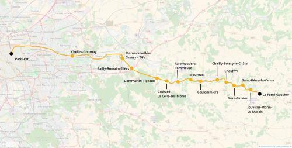

Transilien P La Ferté-Gaucher
Transilien P La Ferté-Gaucher
Paris-Est - La Ferté-Gaucher
Une extension de la ligne p du transilien.
La branche Coulommiers/La Ferté-Gaucher du transilien P serait remaniée pour passer par Marne-la-Vallée Chessy au lieu de Tournan. La ligne de chemin de fer serait réouverte entre Coulommiers et la Ferté Gaucher et éventuellement jusqu'à l'aéroport de Vatry (potentiel Fret et voyageur).
Voir les autres projets associés à cette ligne
Carte

Cliquer pour agrandir
Stations
Si ce projet vous intéresse n'hésitez pas à le (re-)partagez sur les réseaux sociaux ou par courriel ou à en parler autour de vous.
Si vous souhaitez travailler à la concrétisation de ce projet, passez à l'action et contactez nous.
Commenter